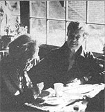

As we've noted several times in these pages, Helen and Scott Nearing are light years ahead of most of us when it comes to getting back to the land and living a life of voluntary simplicity. As well they should be, since they originally homesteaded a run-down farm in Vermont's Green Mountains away back in the autumn of 1932.
Life was good for the Nearings on that mini-farm . . . until the slopes around them exploded into ski resorts in the early 50's, forcing Helen and Scott to move on to a rocky inlet on the coast of Maine and start all over again.
And that's where you'll find the Nearings today: still clearing brush, still building honest stone houses (Helen and Scott are famous for their stone houses), and still raising most of their vegetarian diet themselves in unbelievably productive wholistic gardens . . . just as they've been doing for nearly 50 years.
Naturally (in more ways than one), the Nearings have learned a few things about homesteading and getting back to basics over the years. And, lucky for all of us, they've agreed to share some of that knowledge with MOTHER's readers in a regular question and answer column. If you'd like to get in on the action, send your question or questions about self-sufficient living on the land to Helen and Scott Nearing, THE Mother Earth News(restricted), P. O. Box 70, Hendersonville,N.C. 28791. And please don't expect personal replies to your queries. The most important and most frequently asked questions will be answered here - and here only - where we all can read what the Nearings have to say.
Now that my husband and I have settled into the. "country life", we've discovered - as I'm sure you did - that there are numerous chores that have to be done on a daily, weekly, or monthly basis. How did you two go about dividing up your workload?
Speaking generally, the matters which pertain particularly to the house and household are dealt with by Helen, while those involving farm maintenance and the outdoors are handled by Scott.
We are just finishing the building of a stone wall around our new 50-foot-square garden. The wall is a foot thick, extends about three to four feet underground, and is five feet high. Its construction has taken us both a couple of years of parttime work.
Road building and repair are also shared projects. We garden together, too, but the planning and main work is done by Scott. He also takes care of the whole "wood problem" (we cook and heat with wood), which involves cutting, sawing, chopping, splitting, and stacking . . . as well as keeping the woodboxes full and the fires burning.
We have a large house, and a garden that produces more food than our family can consume, so we usually enjoy having guests. However, some of our visitors - as happened with the proverbial "man who came to dinner" - outstay their welcomes. I know that you, too, maintain a sort of "open house", How have you handled such problems?
For a start, we feed people amply and simply with whatever food is on hand or in the garden. We make no distinction between "everyday" and "company" meals.
Also, to remind visitors of our "boundaries", we have put up an unobtrusive sign that reads. "Our mornings are our own. We'll see visitors from 3:00 to 5:00. Help us live the good life."
Sometimes, of course. the sign goes unseen, or is stepped over, and people arrive at inopportune times. When that happens, we simply keep on working at whatever we're doing and let the visitors fit in as they can or will.
Helen has compiled an anthology (entitled Wise Words on the Good Life ) dealing with such subjects as "The Rewards of Country Living", "The Work Load", "A Woman's Place Is in the Home", "The Male Point of View", etc. (Anyone interested in it or in any of our other books can send a self-addressed, stamped envelope to the Social Science Institute, Harborside, Maine 04852 for Information about price and availability.) Here are some excerpts, from the volume, on "Hospitality and Visitors":
"To me forever be that guest unknown, Who measuring my Expenses by his own, Remarks the difference with a scornful leer, And slights my Humble House and Homely Cheer."
Juvenal, Eleventh Satire (126)
"What to do with these brisk young men who break through all fences, and make themselves at home in every house?"
Ralph Waldo Emerson, Society and Solitude (1870)
"We learned to be chary of roads; they mean people, and commotion, and lack of peace."
Herbert Jacobs, We Chose the Country (1948)
We have no source of power - other than our own muscles - on our farm, and need to find out how to incorporate outcroppings into stone walls. I'm also concerned about the problems of building with large (about five feet in diameter) boulders. I remember, many years ago, a hand rock-splitting device known as a "feather and plug". Do you know how I might locate one of these . . . or any other tool that could handle the job? (Our rocks are mostly granite field boulders.) I'd sure appreciate the information.
In Vermont we built our first stone house against a smooth outcrop of rock (described on page 51 of Living the Good Life ). Here in Maine we first uncovered a rough upthrust of sandstone around 30 feet high by 80 feet long. Then - with pick, bar, and shovel - we detached fragments from the cliff . . . and used the large stones to build our walls and the small pieces to fill our roads.
We know nothing about your "feather and plug" device. In Vermont we had a lot of granite boulders. We used the smaller, smooth-laced ones (none as large as five feet) and did no splitting or cutting.
I would like to know whether you believe in God.
What is God? If you can tell us what you mean by the term, we can discuss the matter . . . if not, there's no way to get down to specifics.
If you think of God as a heavenly Father who can be nudged or cajoled into granting benefits and excusing delinquencies . . . no, we do not believe.
If you think of God as an arbitrary, autocratic ruler of the universe to be propitiated and worshiped . . . our answer, again, would be no.
If "your" God is a tribal chief, a God of battle, and a leader of a chosen people . . . we cannot believe in Him (or Her).
However, if you see God as the unity of all things, including rocks, grass, beasts, clouds, stars, and humans . . , if your God incorporates the above and the below, the plus and the minus, the killer and the killed, the sinner and the saint, the creator and the destroyer . . . yes, we believe.
As a beginning homesteader, I'd appreciate knowing which tools you consider most helpful.
Homestead tools can be broken down into threw classes: general tools (such as picks, shovels, hose, rakes, forks, hammers, saws, and sickles) . . . tools for tilling (including shovels, spading forks, hoes, rakes, wheelhoes, and hand-powered - we use no motorized tillers - cultivators) . . . and tools used in working with wood ( for example, hammers, saws, chisels, squares, files, and levels). In addition to the implements covered in such loose groupings, we occasionally use porthole diggers, drills, tin shears, and so forth . . . and wheelbarrows (or garden carts) for general hauling chores.
This list may sound large, but it doesn't even take into account many specialized tools, and overlooks the tact that you may well want to have a variety of one particular kind of implement. (For instance, we always purchase both long- and short-handled shovels, snow shovels, and spades.)
|
 |
|
|